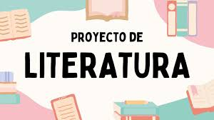

“Aprender español es descubrir nuevas formas de pensar”
Este espacio educativo está diseñado para apoyar el aprendizaje de lengua castellana en estudiantes de bachillerato desde grado sexto hasta grado once.

En esta sección los estudiantes podrán encontrar guías de trabajo, talleres y evaluaciones para fortalecer las competencias en lengua castellana.
El material utilizado incluye recursos educativos del portal Colombia Aprende .
La profesora Diani orienta procesos de enseñanza en lengua castellana para estudiantes desde grado sexto hasta grado once, fortaleciendo habilidades de comprensión lectora, lectura crítica, gramática, literatura y redacción.
Ciudad: Barranquilla
Correo: dianiluz05@gmail.com